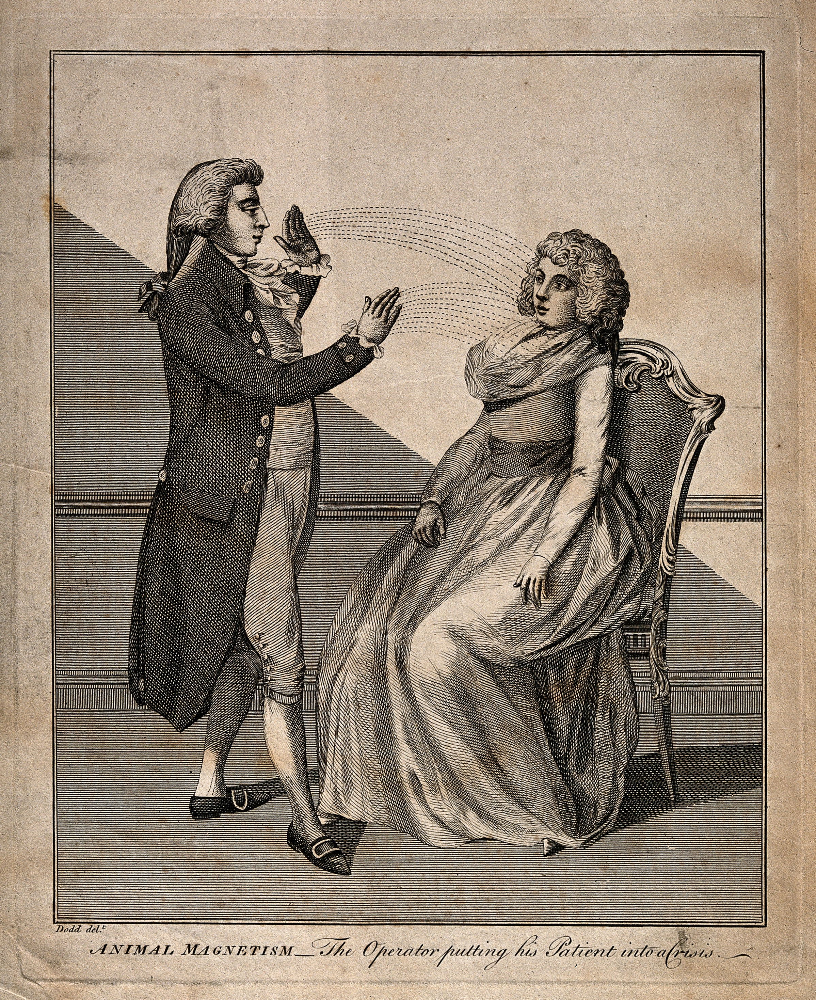

Understanding Hypnotism
Hypnotism is a mental state in which a person becomes deeply focused and highly responsive to suggestions. Contrary to popular belief, it is not a form of magic or mind control. Instead, it is a psychological process that allows individuals to concentrate intensely while remaining aware of their surroundings.
Many therapists use hypnotism as a supportive tool to help people manage stress, reduce anxiety, or change unwanted habits. During hypnosis, the mind becomes more open to positive suggestions, which can strengthen motivation and self-control. Although it may look mysterious, hypnotism is simply a method of guided concentration and relaxation.